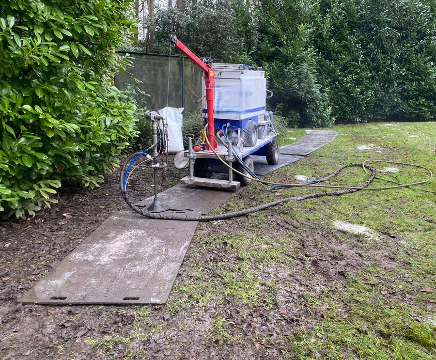
vanaf € 5,9 / m²Verticale drainage
Granulaat met luchtdruk de grond in. Voor tuinen, weides, paardenpistes, sportvelden en bedrijfsterreinen.
- 0,3 tot 2,5 m diep
- Ook in bestaande tuinen
Drassig gazon, plassen op je grindparking of een boom die achteruitgaat? Meestal zit het probleem dieper dan een spade komt. Wij blazen granulaat met luchtdruk in de grond, zodat het water weer weg kan. Zonder graafwerk.
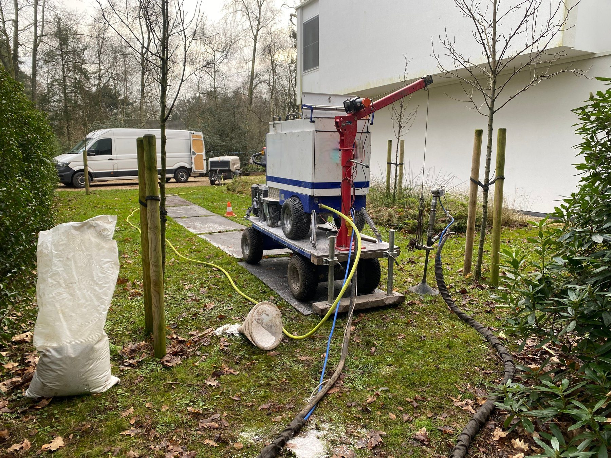
Frezen, spitten of ploegen helpt even, maar de harde laag eronder blijft liggen. Zeker na een verbouwing, als er zware machines over je grond reden.
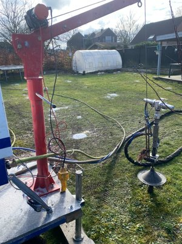
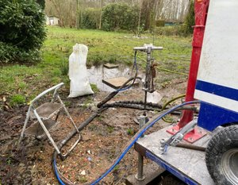
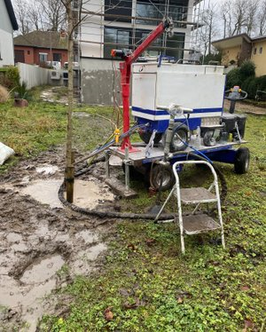
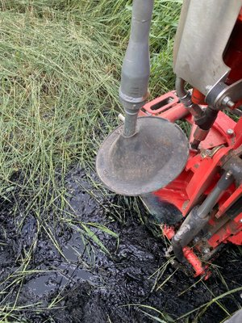
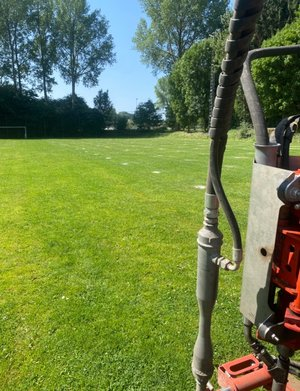
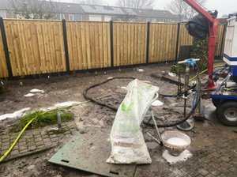
Met hoge luchtdruk breken we de verdichte laag open. In de scheurtjes blazen we granulaat dat de gangen openhoudt. Het regenwater vindt zo weer zijn weg naar het grondwater.

vanaf € 5,9 / m²Granulaat met luchtdruk de grond in. Voor tuinen, weides, paardenpistes, sportvelden en bedrijfsterreinen.
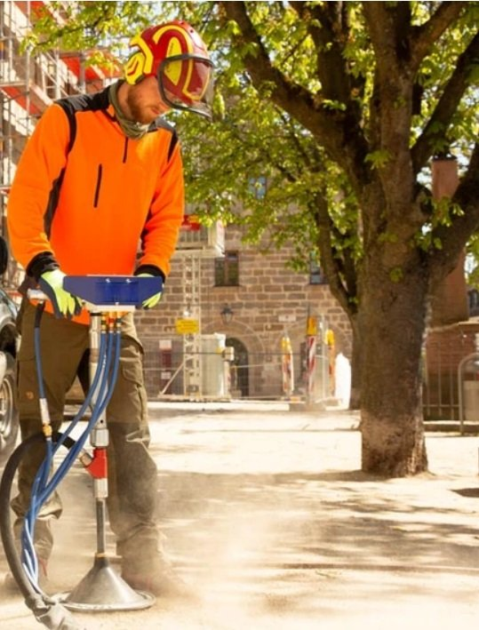
vanaf € 5,9 / m²Meer zuurstof en water rond de wortels, eventueel met voeding erbij. Zonder graven en zonder wortelschade.
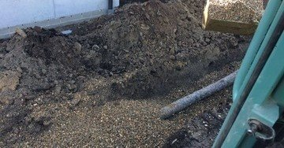
vanaf € 37 / lmDrainagebuizen als verticaal niet kan: bij hoog grondwater, veel puin of funderingen in de weg.
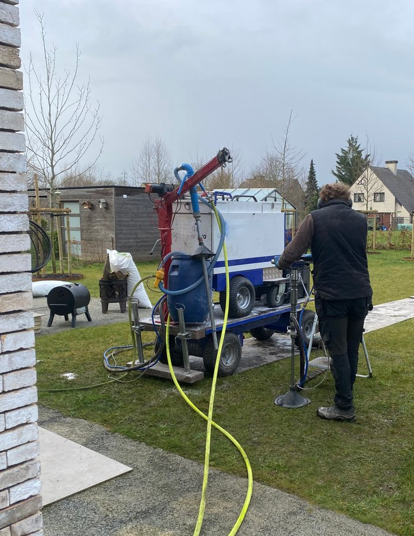
± € 0,69 / literZelf aan de slag? Granulaten, grof drainagezand en bodemverbeteraars, af te halen in Maldegem.
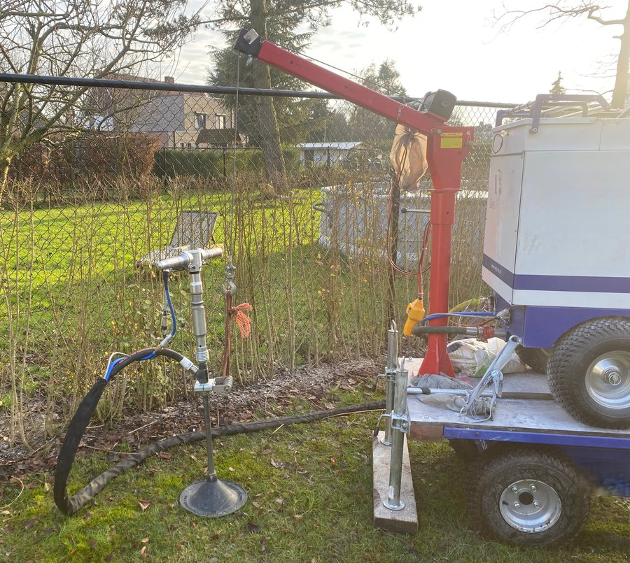
Een drassig gazon na de verbouwing, een voortuin waar niets groeit of een oprit die blank staat. We werken in bestaande tuinen, zonder je terras of borders open te leggen.
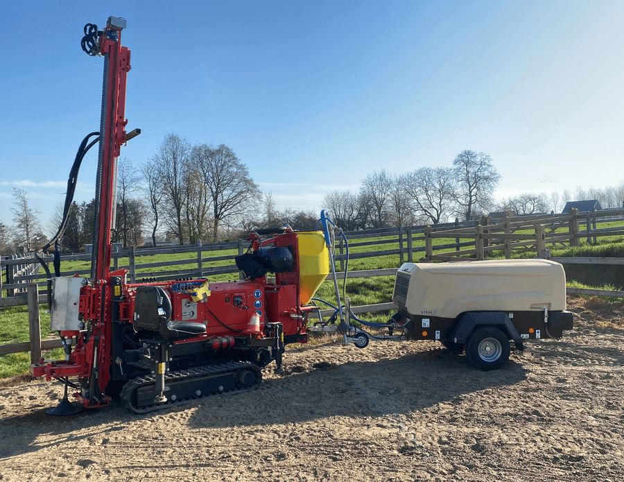
Modder in de weide is lastig voor je dieren en voor jezelf. We behandelen paardenpistes, weides en akkers verticaal, want buizen worden daar door het gewicht van dieren en machines platgedrukt.
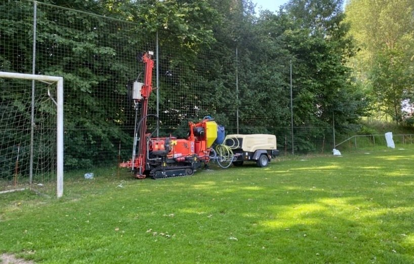
Voor voetbal- en golfclubs, scholen, festivalterreinen en gemeenten: parken, begraafplaatsen en stadsbomen. Bij grotere projecten komen we eerst ter plaatse voor een audit.
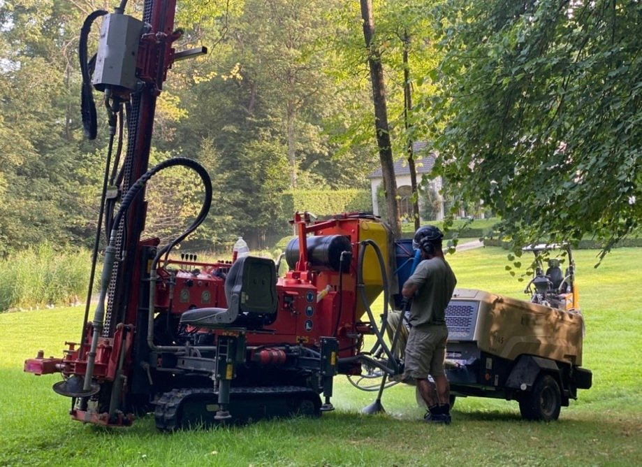
Tuinaannemers, boomverzorgers, groendiensten, architecten en bouwbedrijven roepen ons in voor het stuk onder de grond. Partnervoorwaarden krijg je op aanvraag.
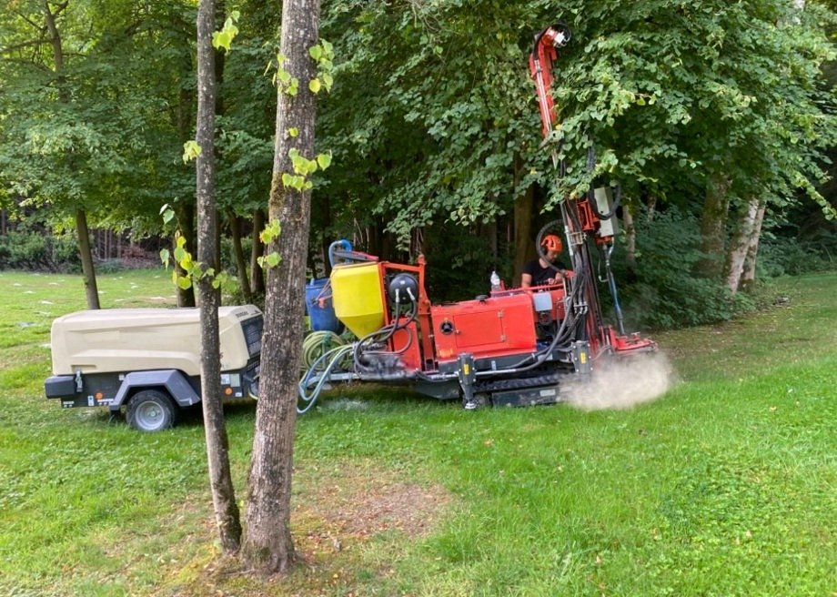
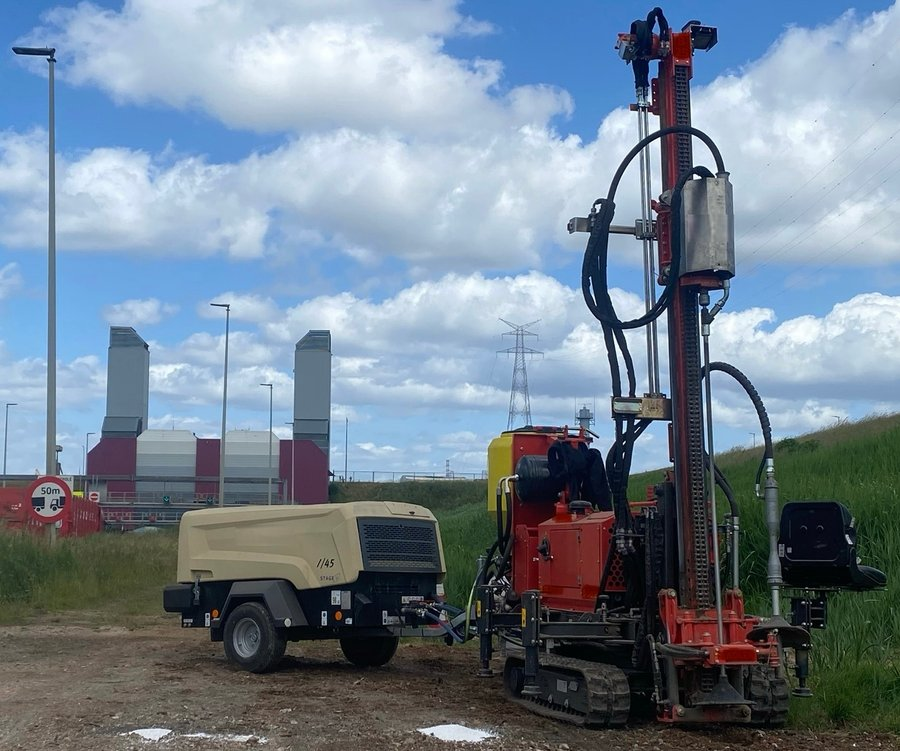
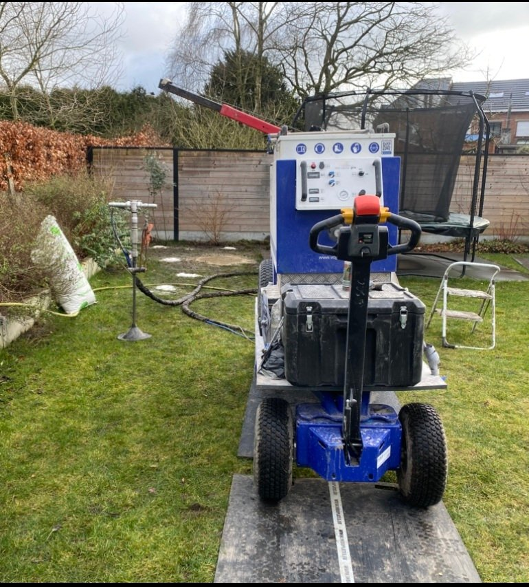
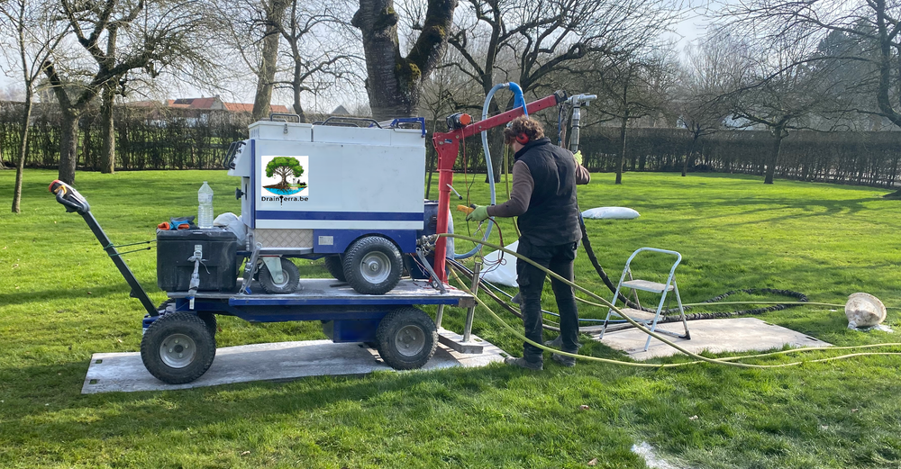
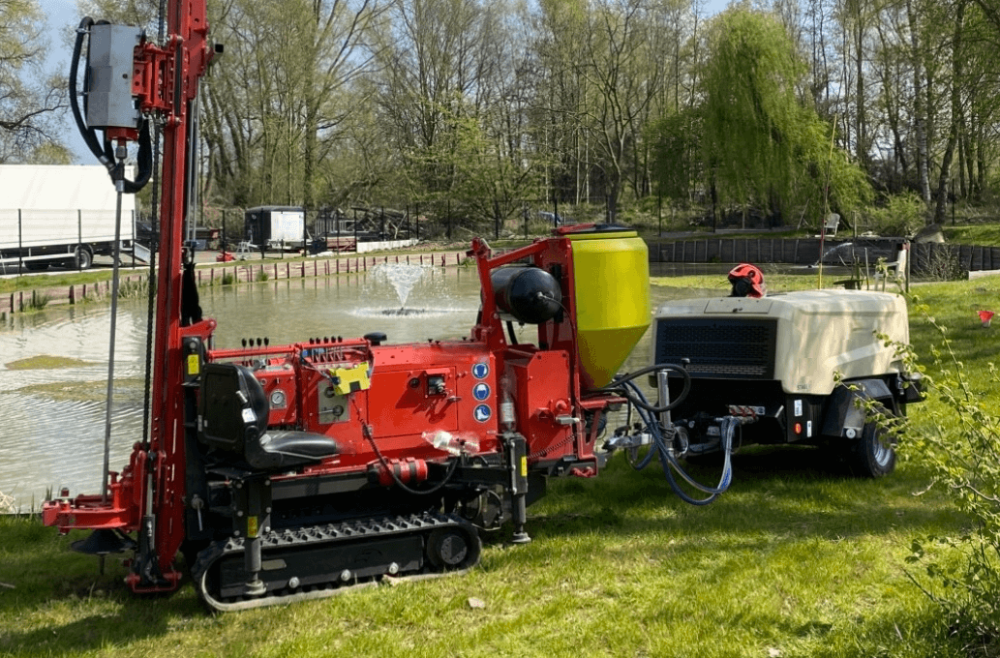
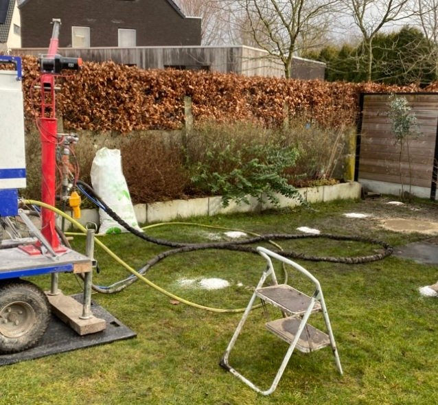
Geen verrassingen achteraf. Hier zie je waar je ongeveer aan toe bent. De echte prijs hangt af van je bodem, de bereikbaarheid en de diepte.
Prijzen excl. btw. Kilometers zijn inbegrepen tot 20 km rond ons depot in Maldegem.
Excl. btw. Uitgaande van lichte zandgrond, vlotte toegang en plofgaten gevuld met granulaat.
Onze tuin was na verbouwingen altijd drassig, maar dankzij het uitstekende werk van het team van drainterra.be is dit probleem eindelijk verholpen. We zijn zeer tevreden!
De professionele aanpak van begin tot eind en efficiënte service van Drainterra hebben ons grasplein getransformeerd. Eindelijk geen plassen meer en het gazon begint herop te leven.
We zitten in Aalter en vertrekken vanuit ons depot in Maldegem. We werken in heel Vlaanderen, en over de grens in Zeeuws-Vlaanderen.
Hoe meer je invult, hoe preciezer onze raming. Je krijgt meestal binnen 48 uur een gratis kostenraming per mail.
We bekijken je aanvraag en mailen je zo snel mogelijk een kostenraming, meestal binnen 48 uur.
Staat je vraag er niet bij? Bel 0494 14 31 30 of mail naar info@drainterra.be.
Nee. We werken met gaatjes van 3 tot 4 cm, zonder sleuven of graafwerk. Het kan zelfs door grind of grasdallen heen.
Bij wateroverlast vaak binnen enkele uren tot dagen. Bij een boom duurt het langer: meestal zie je na enkele weken tot maanden meer groei en gezonder blad.
Breng elektriciteit, water, gas en andere leidingen in kaart en mail ons die info. Weet je het niet precies? Dan brengen we op de dag zelf detectiemateriaal mee.
Niet bij strenge vorst, extreme regen of lange droogte. En zit er veel puin, beton of fundering in de grond, dan kiezen we voor horizontale drainage met buizen.
Buizen leggen vraagt sleuven en werkt slecht onder weides en pistes, omdat het gewicht ze platdrukt. Verticale drainage pakt de verdichte laag zelf aan. Buizen leggen we enkel als verticaal niet kan.
DIEen woordje uitleg van Stijn
Ik maakte deze demo voor jullie om te tonen wat er kan. Na een kort gesprek maak ik er iets veel persoonlijkers van, helemaal naar jullie wens.
Vrijblijvend. Ik kom langs of we bellen.
Op maat, op jullie eigen domein.
Geen voorschot. Jullie betalen pas als alles klaar is.
Hosting, domeinnaam en kleine wijzigingen, zoals nieuwe openingsuren.
Omdat een voorbeeld meer zegt dan een mail. Zo zien jullie meteen wat er kan, en het kost jullie niets.
Nee. Het gesprek is vrijblijvend. Vinden jullie het niks, dan is het daarmee gedaan.
Na ons gesprek staat jullie site binnen 10 tot 14 dagen online.
Zeker. Jullie domeinnaam kan gewoon blijven, de nieuwe site komt in de plaats van de oude.
Nee, dat doe ik op basis van ons gesprek. Eigen foto's zijn mooi meegenomen, maar niet nodig om te starten.